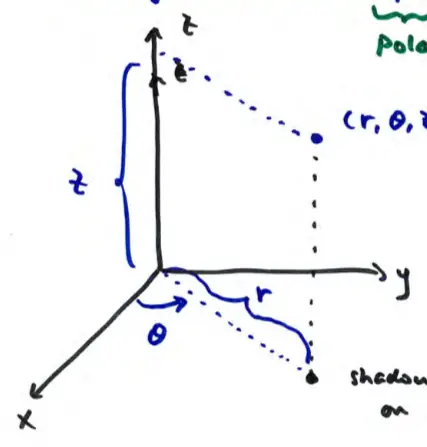

16.5 Triple Integrals in Cylindrical Coordinates
cylindrical: hybrid of polar and cartesian
- plane of "floor" → polar
- height → Cartesian
point in cylindrical: \( (r, \theta, z) \)
Note: \( r \) and \( \theta \) are polar components, while \( z \) is Cartesian.

The diagram illustrates a point in 3D space. The distance from the origin to the projection on the \( xy \)-plane is \( r \), the angle from the \( x \)-axis is \( \theta \), and the vertical distance is \( z \).
shadow of point on \( xy \)-plane
Conversion Formulas
\( (x, y, z) \to (r, \theta, z) \)
\[ r^2 = x^2 + y^2 \]
\[ \tan \theta = \frac{y}{x} \]
(polar components)
\[ z = z \]
\( (r, \theta, z) \to (x, y, z) \)
\[ x = r \cos \theta \]
\[ y = r \sin \theta \]
(polar components)
\[ z = z \]